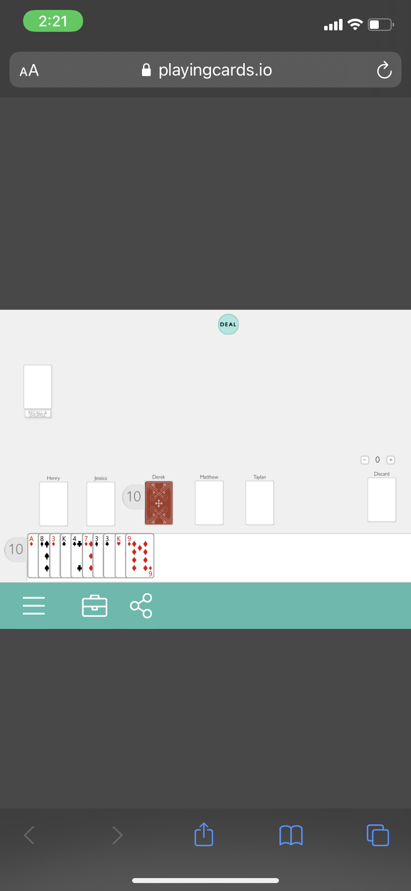

Well I thought it was very interesting playing this particular game because I had never played this game in my life and I won the first time I ever played it. I felt like I played my cards right if you know what I mean. Basically, I played slow, quiet and steady. The reason why I did this was to get everyone thinking that I was not out to get them so, they would not try to go for me. While everyone was calling BS on eachother I observed and saw that they kept going back and forth at each other. This led me to be very unsuspicious for them. I also played one card at a time because I knew if I tried to put more than one down at a time they would all get suspicious of me. I was intrigued how my plan worked out. I thought they would know I was the most suspicious because I was not calling anyone out or talking the whole game. I feel like in most games the quiet ones are typically the underdogs and find a way to take the trophy home. I also paid very close attention to everyone. I knew who had BS cards and if it really came down for me to sneak in a BS I would do it at the last minute when they were down with only a couple of cards left. You can also tell by each and one of their voices if they were playing the wrong cards down. They will pretend like they did not know it was their turn or ask “which card was it again”. It sounded smart but I knew they weren't fooling me with their tactics. However, I enjoyed playing this game with my group. I had a great time and because I won!
Session Report:
Session Report
Cards Dealt
Round 1
Henry - Plays 1 ace
Jessica - Plays one 2
Derek K - Plays two 3’s
Matthew- Plays one 4
Taylan- Plays one 5
Round 2
Henry - Plays one 6
Jessica - Plays one 7
Derek K - Plays one 8
Matthew- Plays one 9
Taylan- Plays one 10
Round 3
Henry - Plays 1 jack
Jessics calls bs
Henry picks up all cards cuz he put a 5
Jessica - Plays one J
Derek calls bs
Derek is wrong, picks up cards
Derek K - Plays 2 queen
Matthew- Plays one King
Taylan- Plays one Ace
Round 4
Henry - Plays one 2
Jessica - Plays one 3
Derek K - Plays three 4’s
Jessica calls bs
Derek was wrong, picks up cards
Matthew- Plays one 4
Taylan- Plays one 5
Round 5
Henry - Plays one 6
Matthew calls bs
Matthew was wrong, picks up 3 cards
Jessica - Plays one 7
Derek K - Plays two 8’s
Jessica calls bs
Derek was wrong picks up 3 cards
Matthew- Plays one 8
Taylan- Plays one 9
Round 6
Henry - Plays one 10
Jessica - Plays one Jack
Derek K - Plays one Queen
Matthew- Plays one King
Taylan- Plays one Ace
Round 7
Henry - Plays one 2
Jessica - Plays one 3
Derek K - Plays one 4
Jessica calls bs
Derek picks up 5 cards
Matthew- Plays two 4s
Taylan- Plays one 5
Round 8
Henry - Plays one 6
Matthew calls bs
Henry picks up 4 cards
Jessica - Plays one 7
Derek K - Plays one 8
Matthew- Plays one 9
Taylan- Plays one 10
Round 9
Henry - Plays one J
Derek calls bs
Henry picks up 5 cards
Jessica - Plays one J
Derek calls bs
Jessica picks up 1 card
Derek K - Plays three J
Matthew- Plays one Queen
Taylan- Plays one King
Matthew calls bs
Matthew picks up 5 cards
Round 10
Henry - Plays 2 Aces
Jessica - Plays one 2
Derek calls bs
Jessica picks up 3 cards
Derek K - Plays one 3
Matthew- Plays one 4
Taylan- Plays one 5, im out of cards i win
TAYLAN wins!
Game Board
 Home Page